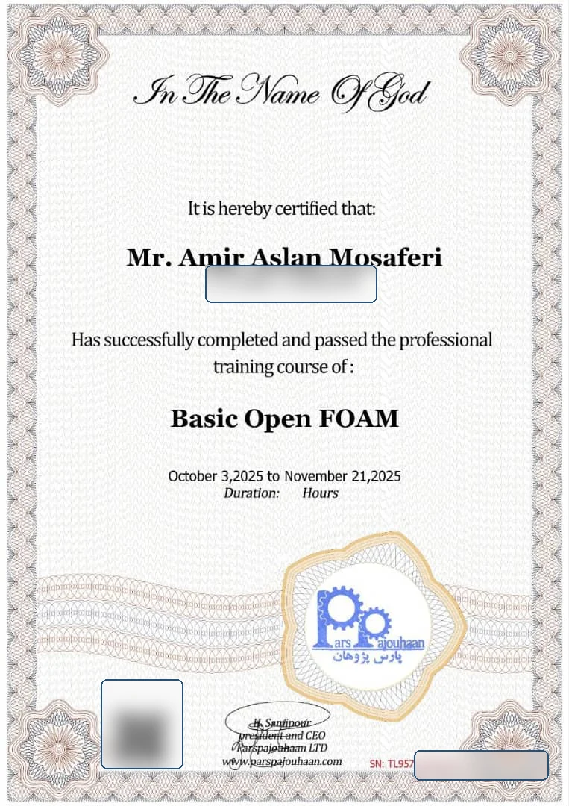

01
ساختار کیس OpenFOAM
درک ساختار پوشههای 0، constant و system و اینکه تقریباً تمام تنظیمات حل، مش، فیزیک و کنترل اجرا در Dictionaryها تعریف میشود.
OPENFOAM TRAINING · CFD RESEARCH TOOLKIT
این صفحه خلاصهای تمیز و قابل ارائه از نکات دوره OpenFOAM است؛ تمرکز آن روی ساخت کیس، مشبندی، کنترل کیفیت مش، تعریف شرایط مرزی/اولیه و شروع برنامهنویسی در OpenFOAM است.
foamCleanTutorials blockMesh checkMesh surfaceFeatureExtract snappyHexMesh -overwrite paraFoam
CERTIFICATE
برای حفظ حریم خصوصی، نسخه نمایشدادهشده در سایت دارای محوسازی شماره شناسایی، QR و Serial است.

Privacy-safePARS PAJOUHAN INSTITUTE
این دوره برای تقویت مسیر پژوهشی من در CFD، ساختار کیسهای OpenFOAM، مشبندی و شخصیسازی شرایط مرزی/اولیه استفاده شد.
WHAT I LEARNED
درک ساختار پوشههای 0، constant و system و اینکه تقریباً تمام تنظیمات حل، مش، فیزیک و کنترل اجرا در Dictionaryها تعریف میشود.
تعریف دامنه ساده با blockMeshDict؛ شامل vertices، blocks، edges، boundary patches، simpleGrading و کنترل کیفیت با checkMesh.
مشبندی هندسههای پیچیده با STL، refinement، snapping، boundary layer و meshQualityControls برای تولید مش body-fitted.
استفاده از #codeStream برای نوشتن مستقیم کد C++ داخل Dictionary و ساخت شرایط مرزی یا اولیه سفارشی بدون ورود کامل به توسعه Solver.
تعریف پروفیلهای سرعت مثل parabolic یا paraboloid روی patchها و دسترسی به مختصات مرکز faceها و زمان حل.
آشنایی با ساخت boundary condition جدید بهصورت کتابخانه، فایلهای .C و .H، دستور wmake و لینک کردن library به solver.
SNAPPYHEXMESH WORKFLOW
COMMAND CHEATSHEET
foamCleanTutorials blockMesh surfaceFeatureExtract snappyHexMesh -overwrite checkMesh -latestTime paraFoam
foamNewBC -f -v myParabolicVelocity
cd myParabolicVelocity
wmake
# Load compiled library
libs ("libmyParabolicVelocity.so");
RESEARCH VALUE